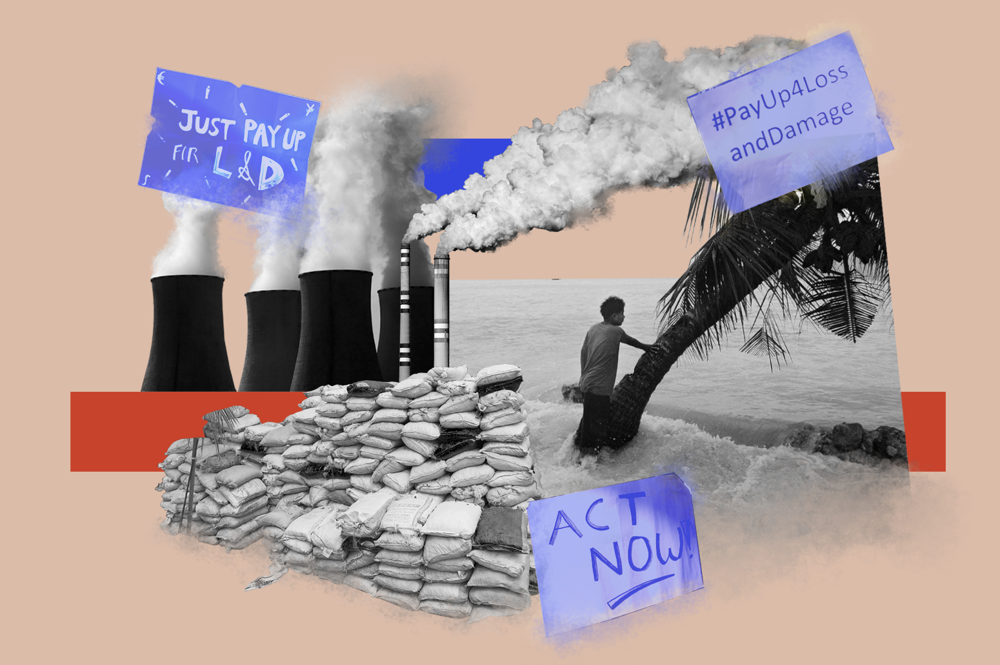
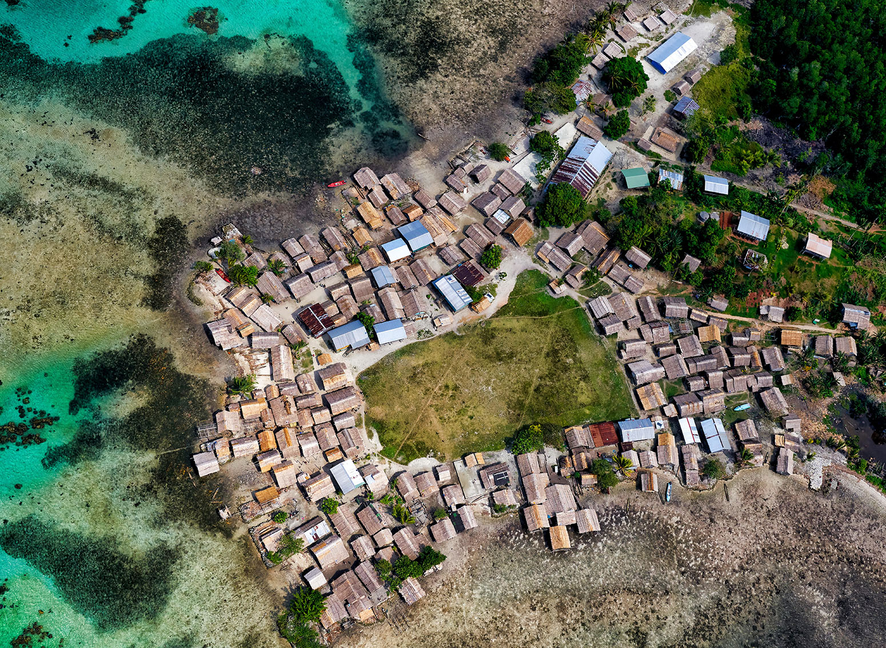
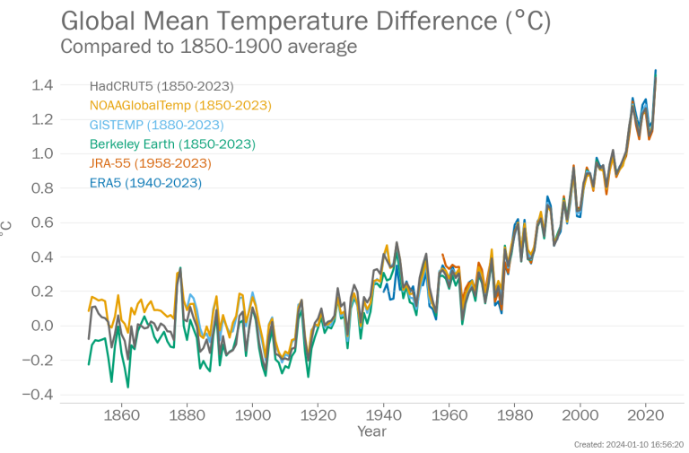
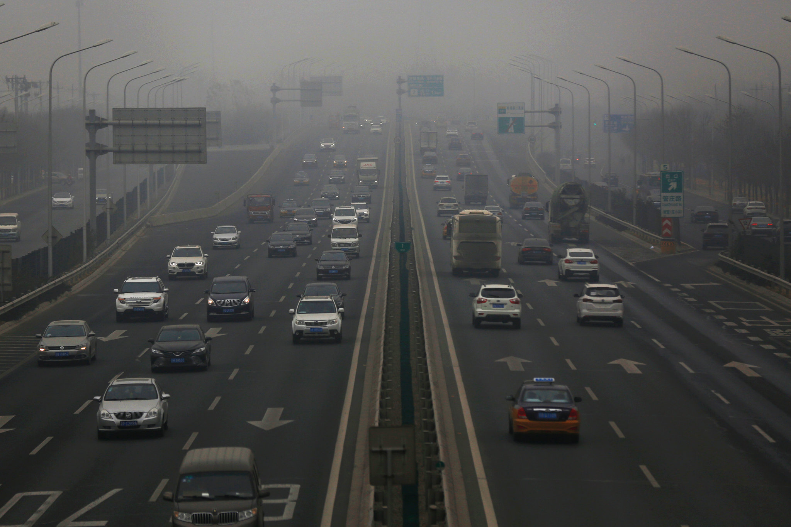
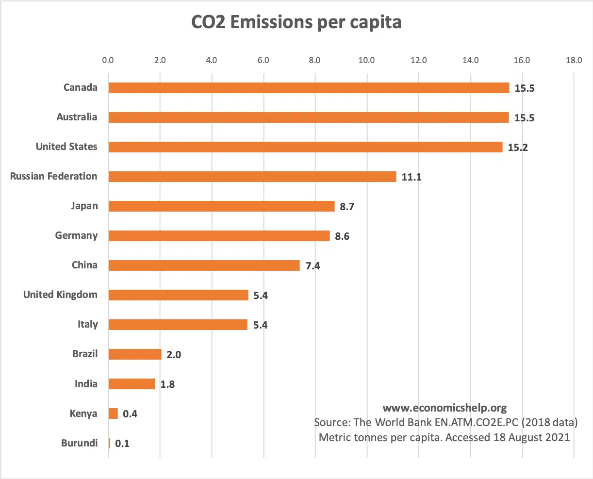

Earth, this is what we call our one and only home. In this vast expense Earth is the only planet which has been able to house life. For millions of years there has been countless species which have roamed on this beautiful planet but now this home of ours is facing an existential threat like no one has ever seen before. And ones which are causing it are called greenhouse gases. But, the success of animals as a group, and even animal size, seems to be related to levels of oxygen.
Global warming refers to the long-term increase in Earth's average surface temperature due to human activities, primarily the release of greenhouse gases such as carbon dioxide (CO2), methane (CH4), and nitrous oxide (N2O) into the atmosphere. These gases trap heat from the sun that would otherwise escape back into space, creating a "greenhouse effect" and leading to a gradual warming of the planet. global warming include
The origin of global warming can be traced back to the Industrial Revolution in the 18th and 19th centuries when humans began to significantly increase the burning of fossil fuels such as coal, oil, and natural gas for energy and industrial processes. This led to the release of large amounts of greenhouse gases, especially carbon dioxide (CO2) global warming are introduced into the atmosphere.
Since 1970, CO2 systematic global temperature records with wide coverage and accuracy only began in the late 19th century, primarily through the use of thermometer measurements. Before that, scientists rely on proxy data such as tree rings, ice cores, and historical records for temperature estimates.
Global warming is causing significant changes in climate patterns worldwide, leading to more frequent and intense heatwaves, droughts, wildfires, storms, and extreme weather events. These changes can disrupt ecosystems, damage infrastructure, and threaten human lives and livelihoods disadvantages Global warming is causing significant changes in climate patterns worldwide, leading to more frequent and intense heatwaves, droughts, wildfires, storms, and extreme weather events. These changes can disrupt ecosystems, damage infrastructure, and threaten human lives and livelihoods.
In some regions, higher temperatures and increased carbon dioxide (CO2) levels can enhance plant growth and agricultural productivity. This effect, known as CO2 fertilization, can potentially lead to higher crop yields in certain areas.advantages Warmer temperatures may allow species to expand their ranges into regions that were previously too cold for them to thrive. This could lead to increased biodiversity in some ecosystems.
Global warming damages the environment in numerous ways, affecting ecosystems, biodiversity, natural resources, and the overall balance of Earth's systems. Here are some of the key ways in which global warming impacts the environment:
Melting Ice: Global warming leads to the melting of glaciers, ice caps, and polar ice sheets, contributing to rising sea levels. This phenomenon threatens coastal communities, ecosystems, and infrastructure with increased flooding, saltwater intrusion into freshwater sources, and erosion of coastlines.
Ocean Acidification: Increased CO2 levels in the atmosphere are absorbed by the oceans, causing them to become more acidic. This harms marine life, particularly coral reefs and shellfish, with consequences for fisheries and ecosystems.
More Intense and Frequent Extreme Weather Events: Climate change induced by global warming has led to an increase in the frequency and intensity of extreme weather events, such as hurricanes, droughts, floods, and wildfires, causing damage to property and loss of life.
Sea Level Rise: As ice melts and seawater expands due to temperature increases, sea levels rise. This poses a severe threat to coastal communities, causing flooding and erosion.
Disruption of Ecosystems: Changing temperature and precipitation patterns are disrupting ecosystems and affecting the distribution and behavior of wildlife. Many species are struggling to adapt or face the risk of extinction.
Threats to Agriculture and Food Security: Altered weather patterns can harm crop yields, disrupt food production, and lead to food shortages and increased food prices.
Displacement and Migration: Rising sea levels and extreme weather events are causing the displacement and migration of populations from vulnerable regions, leading to potential conflicts and social disruptions.
Economic Costs: Climate change resulting from greenhouse gases has significant economic costs, including damage to infrastructure, increased healthcare expenses, and expenses related to adapting to a changing climate.
Loss of Biodiversity: Climate change and habitat destruction due to environmental changes harm biodiversity, contributing to species extinction and reduced genetic diversity.
global warming requires international cooperation, mitigation efforts to reduce greenhouse gas emissions, adaptation strategies to cope with existing and projected impacts, conservation of natural habitats, sustainable resource management, and investments in clean energy and resilient infrastructure.
